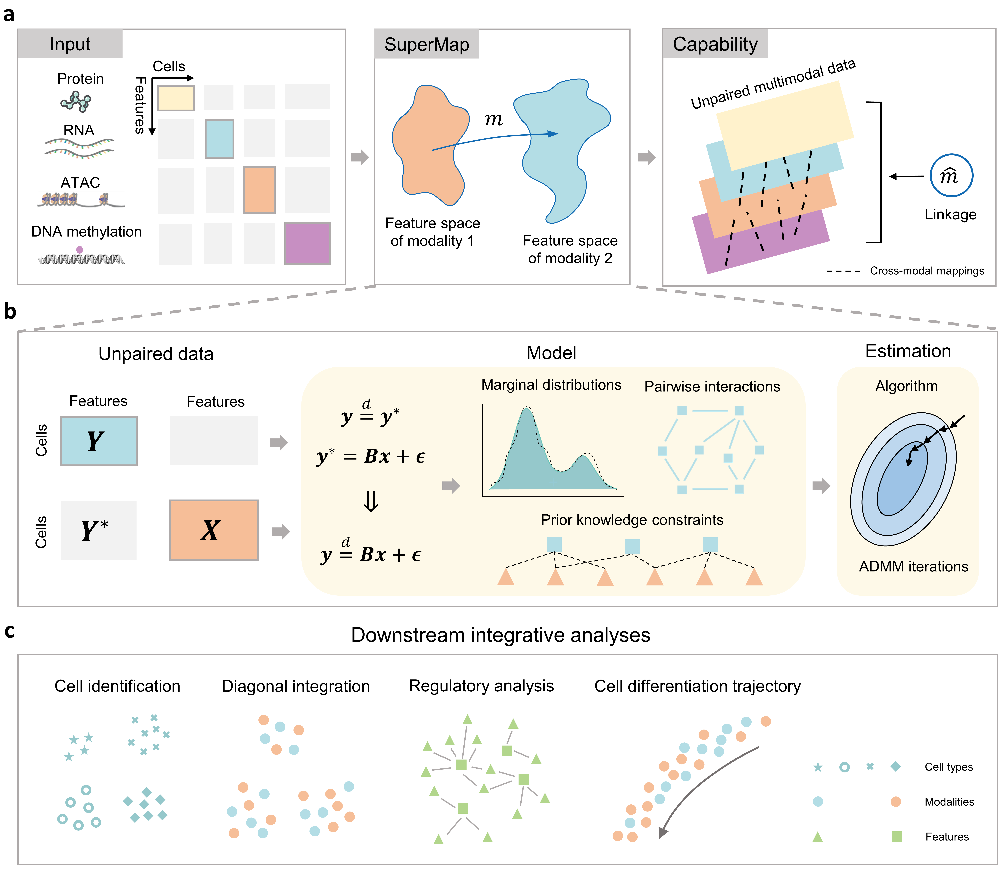

SuperMap is an R package for the integrative analyses of unpaired single-cell multimodal data. While a substantial amount of single-cell multimodal data has been generated and accumulated, most of these datasets are unpaired, characterized by distinct feature spaces and a lack of cell-wise correspondence. The absence of explicit linkages between modalities poses a fundamental challenge for data integration and interpretation. To address this, we introduce SuperMap, a statistical learning method. SuperMap learns cross-modal mappings to effectively bridge and link different modalities, facilitating a wide range of downstream integrative analysis tasks, including cell-type identification, diagonal integration, regulatory analysis, and trajectory inference.

SuperMap is implemented as an R package which can be installed by running the following command in R:
devtools::install_github('chaodeng-aca/SuperMap')
For a step-by-step tutorial, please refer to the vignette directory in the repository, which provides a usage example.